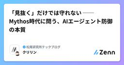

松尾研究所テックブログのフィード
https://zenn.dev/p/mkj
株式会社松尾研究所のテックブログです。
フィード

「見抜く」だけでは守れない ── Mythos時代に問う、AIエージェント防御の本質 1
1
松尾研究所テックブログのフィード
1. 背景と主題 ── 攻撃面の広がり × 攻撃側の推論能力の向上松尾研究所シニアデータサイエンティストの具です。とあるプロジェクトでAIエージェント×プライバシー・セキュリティ領域の研究に取り組むことになりました。この領域を学び始めて強く感じたのは、「個別の攻撃/防御手法を調べているだけでは、AIエージェントの防御が"なぜ難しいのか"の核心には届かない」ということでした。本記事は、手法の網羅ではなく、その難しさの本質を掘り下げることを狙った記事です。文献調査と思考実験をもとにまとめています。私がこの領域に足を踏み入れた2026年6月ごろ、世間では Anthropic の「Myt...
12時間前

非同期パーソナルエージェントのススメ
松尾研究所テックブログのフィード
松尾研究所シニアデータサイエンティストの太田です。普段はLLMの事後学習や、社内向けのエージェント開発まわりに関わっています。先日弊社の尾崎さんの記事でも紹介がありましたが、現在松尾研究所では各個人がパーソナルエージェントの開発と業務の効率化に取り組んでいます。今回は自分が構築しているパーソナルエージェントについて、「非同期性」に焦点を当てて紹介したいと思います。エージェントにおける同期型のインタラクションがチャットUIやTUIを始めとした人とエージェントの一対一の会話（キャッチボール）であるとすると、非同期型のインタラクションは「ユーザーが指示するタイミングとエージェントが実行する...
9日前
【JSAI2026】松尾研究所 参加レポート
松尾研究所テックブログのフィード
【JSAI2026】松尾研究所 参加レポートこんにちは，株式会社松尾研究所の尾崎です．2026年度 人工知能学会全国大会（第40回, JSAI2026）が 2026年6月8日〜12日，Gメッセ群馬（高崎）で開催されました．松尾研究所は企業展示ブースを出展し，複数名のメンバーが現地で聴講・発表・ブース運営に参加しました．松尾研究所ブースの様子（うどんをもってメンバーで！）ブースを訪れていただいた方には日の出製麵所のうどんをプレゼントしていました！(理由はまた聞いてください()本記事は，まず松尾研究所からの関連発表をまとめて紹介し，そのうえで参加メンバーがそれぞれ 現地で「刺...
11日前
AI時代の競争優位はどこに宿るのか：PL思考からBS思考の投資へ
松尾研究所テックブログのフィード
松尾研究所のシニアAIコンサルタントの吉岡です。普段は、企業のAI戦略の策定からAX推進まで、経営とAIをつなぐご支援に携わっています。企業のAI実装は「PoCの時代」からAIが業務の中で回り続ける「オペレーションの時代」へ移行しつつあります。この転換期において、経営目線では中長期的な競争優位に繋がるAI投資が重要であり、本記事では「BS思考のAI投資」「知能資本」というキーワードで整理しています。!主な想定読者企業のAI投資・AX推進の意思決定に関わる経営層・事業責任者の方PoCやユースケース開発を進めてきて「次の一手」を検討している推進担当の方AIのROIは出始めたもの...
16日前
Claude codeと論文書いたら良い論文“は”できた
松尾研究所テックブログのフィード
こんにちは，松尾研究所の尾崎です．25卒でデータサイエンティストをやっています．皆さん，CLI Agent使いこなせてますか？自分はClaude CodeをオーケストレーターとしてCodex CLI・Gemini CLI・Opusサブエージェントを協調させる開発環境Claude Code Orchestraを作ってきましたし，最近は自分のObsidian vaultを複数エージェントで回すClaudian Orchestraという環境も育てています．今回はCLI Agentと論文執筆にチャレンジしたので，備忘録を作ります．先月ARR（ACL Rolling Review）に投...
17日前
Agentic RLにおけるMITOとTITO
松尾研究所テックブログのフィード
こんにちは。松尾研究所シニアデータサイエンティストの太田です。この記事ではLLMをエージェントとして学習をする、Agentic Reinforcement Learning （以下Agentic RL）について、少しニッチな話をしたいと思います。AIエージェントとは、自律的かつ反復的なツールコールを通じて外部環境と相互作用のできるLLMを指します。このようなエージェントを学習する際に一般的に必要となるのがAgentic RLであり、モデルが「自由に動ける」仮想環境を準備して放ち、指示したタスク下における行動と結果に応じて報酬を与えることで、タスクの実行能力を獲得します。詳しくは下記の...
18日前
Claudian Orchestra：Obsidianで作るPersonal Knowledge Base
松尾研究所テックブログのフィード
松尾研究所の尾崎です．25卒でデータサイエンティストをやっています．以前，「AI時代におけるタスク管理を考える」という記事を書きました．ざっくり言うと，AIに実行を「委任」して，人間は複数の作業の「中間状態」を監督することに専念すれば，マルチタスクのスイッチングコストは大幅に下げられるんじゃないか，そしてタスク管理はいずれ「人の生産性を上げるツール」と「AIを動かすインターフェース」を兼ねていくのではないか，という話でした．あの記事の宿題として，「じゃあ，その"インターフェース"の実体って，具体的に何なんだ？」という点について考えてみます．当時の自分はGeminiセントリックな環境（...
22日前
OpenEnvとCUBEから見るAgentエコシステム標準化の動向
松尾研究所テックブログのフィード
2025年以降、エンタープライズのAI活用の議論は少しずつ変化しています。以前は「どのモデルが最も高性能か」「どのAgentフレームワークを採用すべきか」が主な関心事でした。しかしモデル性能が急速に向上した結果、最近では「業務でどう活用するか」「継続的に改善できるか」という運用面への関心が強くなっています。特に重要なのは、Agentの学習・評価を支える環境の位置づけが変わりつつあることです。従来のベンチマークは、主にモデルの性能を測るためのものでした。しかしAgent RLやpost-trainingが現実的な選択肢になりつつある現在、ベンチマークや実行環境は単なる採点ツールではあ...
1ヶ月前
Kaggleコンペ紹介：NVIDIA Nemotron Model Reasoning Challenge
松尾研究所テックブログのフィード
はじめにこんにちは、松尾研究所 データサイエンティストの力岡です。今回、Kaggleで開催された 「NVIDIA Nemotron Model Reasoning Challenge」 コンペに参加し、金メダルを獲得することができました。本記事では、コンペの概要と公開ベースライン、私達の取り組み、そして上位解法について紹介します。https://matsuo-institute.com/2026/06/1297/!本記事は私の理解として記述をしているため、一部に誤りや解釈の相違が含まれる可能性があります。あらかじめご了承ください。 コンペ概要https://www....
1ヶ月前
LLMが書いた「正しそうな言葉」に感じる違和感
松尾研究所テックブログのフィード
松尾研究所でシニアデータサイエンティストをしている大岡です。この文章はかなり整っている。それどころか内容も正しいし思考も深い。ただ、その文章を読んで「これは誰の判断なのか」と感じることがある。今回は、この違和感について整理してみたいと思います。LLMの出力はすでにかなり自然で、仕事の資料や文章にそのまま入り込める程度には整っているからこそ、単に「AIは間違えることがあるので、人間が確認しましょう」という注意喚起だけでは、私が感じている違和感には届かない気がしています。たとえば、LLMが生成した文章を、そのまま社内資料に貼る場面を考えてみます。文章は自然で、論理もそれなりに通...
1ヶ月前
gh skill でAIエージェントにAgent Skills を取り込む・公開する方法
松尾研究所テックブログのフィード
Anthropic が提唱したAgent Skillsがここ最近急速に様々なAIエージェントの機能としてのスタンダードになってきました。SKILL.md というMarkdownにフロントマターでメタ情報を書き、同じディレクトリに必要なスクリプトやテンプレートを置くというシンプルな構造で、手軽に使えることが特徴です。ただ「人が公開してくれているスキルを自分の環境に取り込む」のと「自分のスキルを配布する」のが、地味に面倒だったりします。git cloneしてディレクトリだけコピーしたり、AIエージェントによって置く場所を変えたりシンボリックリンクを貼ったりと、若干手作業が必要でした。pl...
1ヶ月前
AIコーディングではコードではなく検証プロセスをレビューする
松尾研究所テックブログのフィード
AIコーディングでは、どうしても「どれだけ速く実装できるか」に注目が集まりがちです。ただ、実務で本当に難しいのは速度そのものではなく、品質をどう安定させるかです。最近は、AIコーディングにおける品質管理を、次の4つの問いで整理しています。エージェントにどこまで検証させるか何を人間がレビューすべきかインストラクションをどう安定させるかコーディングが自動化されたあと、設計をどう扱うかこの記事では、いま実践していることを中心にまとめます。 問い1：エージェントにどこまで検証させるかレビューを減らすには、エージェントが検証できる範囲を広げる必要があります。開発における...
1ヶ月前
自分専用のAIニュースキュレーターをCodexで作って約1か月運用してみた
松尾研究所テックブログのフィード
こんにちは、松尾研究所 データサイエンスチームのマネージャーの浮田です。AI系のニュース、毎日とても多いですよね...!!論文、モデルのリリース、プロダクトのローンチ、ビジネス動向など、毎日大量のニュースが流れてきます。これらを全部丁寧に追うのはとても難しくなってきています。これまで私は、情報収集には主に以下のようなニュースレターを使っていました。https://tldr.tech/https://nlp.elvissaravia.com/しかしこれらのニュースレターには、あくまでも他人がキュレーションしたものなので、私の興味関心と全く一致するとは限らない。例えば、私は半...
1ヶ月前
【入社エントリ】長年勤めたメーカーを辞めて松尾研究所に入社した話
松尾研究所テックブログのフィード
はじめに松尾研究所に2026年4月からジョインした具利晟（ク リソン）です。愛称はドラゴンボールでお馴染みのクリリンです。由来はお気づきの通りです。現在はデータサイエンスチームのシニアデータサイエンティストとして、金融領域のLLM活用に関する開発寄りのPJT（プロジェクト）や、Agentic RLについての探索的な研究寄りの活動等に参画しています。気がつけば入社から約2ヶ月、激動の期間が閃光のように過ぎ去りました。まさに「光陰矢の如し」です。松尾研究所では、皆さん色々なタイミングで入社エントリを書いているようですが、私がこのタイミングでの執筆を決意したのは、同チームの太田幹さんと...
2ヶ月前
「LeIsaac」入門：シミュレーションでのデータ収集からポリシー学習まで
松尾研究所テックブログのフィード
はじめにこんにちは、松尾研究所でデータサイエンティストをしている力岡です。近年、ロボティクス領域におけるAIの発展が目覚ましいですが、中でもシミュレーション環境でのデータ生成と実機への移行は非常に重要なテーマになっています。今回ご紹介する 「LeIsaac」は、Hugging Faceのオープンソースライブラリ「LeRobot」と、NVIDIAのロボットシミュレータ「Isaac Sim / Isaac Lab」をうまく繋いでくれるフレームワーク で、シミュレーション上のロボットと実機をほぼ同じ手順で扱うことができます。本記事では、LeIsaac の概要やアーキテクチャの仕組みを...
2ヶ月前
社内向けAIアシスタントを3か月間試験運用してみた
松尾研究所テックブログのフィード
松尾研究所のからあげ（@karaage0703）です。松尾研究所では 2026年2月ごろから、Slack上でOpenClawライクな社内AIアシスタントソフトを、一部のプロジェクトで試験運用してきました。この記事では、AIアシスタントソフトの概要・活用例・実運用アンケート結果についてまとめたものの一部を紹介します。社内ツールの紹介ではありますが、「どのように業務でAIを活用していくか」という同じ悩みを持つ方の参考になれば幸いです。 AIを活用して業務の負荷軽減をしたい松尾研究所では、共同開発案件の数が増えるにつれてPMまわりの「情報検索」「議事録・週報の作成」「PRレビューの一...
3ヶ月前
OpenClawとHermesの違いを思想から理解する
松尾研究所テックブログのフィード
松尾研究所シニアデータサイエンティストの太田です。普段はLLMの事後学習に関するプロジェクトに携わっています。現在松尾研究所では各種業務をメンバーに代わって自律的に代行するパーソナルエージェントの社内開発に取り組んでいます。この記事ではそうした開発のなかで調査をしたOpenClawとHermesについて、思想の違いとデザインチョイスを主に共有したいと思います。!この記事のターゲットOpenClawやHermesを名前は知っているが違いがよくわからない人AIエージェントの「アーキテクチャ」（あるいは「ハーネス」）に興味がある人組織内でClaw活用を検討している人なおこの記...
3ヶ月前
質問と回答からLLMの思考過程を合成できる手法、REERの紹介
松尾研究所テックブログのフィード
はじめにこんにちは。株式会社松尾研究所インターンの髙橋彰仁です。普段は、LLMの事後学習に関連する研究開発プロジェクトに携わっています。現在、大規模言語モデルにおいては、指示に対してまず思考（thinking）を出力し、そこから最終回答を生成するReasoningモデルと呼ばれるものが主流になっています。Reasoningモデルの学習には、良質なChain-of-Thoughtデータ（思考過程のデータセット）が必要となるため、2026年現在、これらの合成方法について様々な手法が提案されています。その中でもこの記事では、ある質問と理想回答のペアに対して、中間を補う（質問から回答に...
3ヶ月前
AIエージェントの「できる」と「任せられる」の間にある壁
松尾研究所テックブログのフィード
2026年に入り、AIエージェントの性能競争はかつてない熱を帯びています。ベンチマークの数字だけを見れば『万能』に近づいているようですが、いざ業務フローに組み込むと、最後まで仕事をやり遂げてくれないもどかしさに直面するケースが増えています。なぜ、単発のタスクでは優秀なAIが、一連のプロジェクトになると急に失速してしまうのか。2025年後半から登場した実務特化型のベンチマークをもとに、課題と対策を整理してみます。なお、以下の内容は筆者の経験談ではなく、2025年から2026年にかけて公開された研究論文や技術レポートに基づく示唆であることをご留意ください。 「単発タスク」は得意になっ...
3ヶ月前
世は大環境時代 - エージェントハーネスとRL環境の展開から見えてくるもの
松尾研究所テックブログのフィード
松尾研究所の長谷です。データサイエンスチームのマネージャーを務めております。2026年に入って「ハーネスエンジニアリング」がバズワードになりました。同時に、強化学習（RL）の文脈でも「RL環境」への注目が急速に高まっています。この2つ、使われている領域は異なりますが、根っこの思想は驚くほど似ています。どちらも「モデルだけではなく、モデルを取り巻く環境の設計が成果を左右する」という認識に立っていて、さらにその環境をポータブルに共有・再利用できる仕組みが同時多発的に生まれています。この記事では、エージェントハーネスとRL環境それぞれの動向を整理しつつ、両者に共通する思想がなぜリーズナ...
3ヶ月前